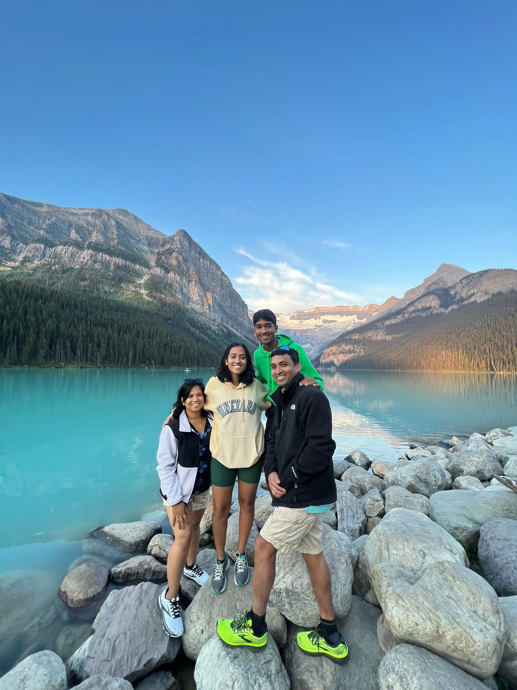
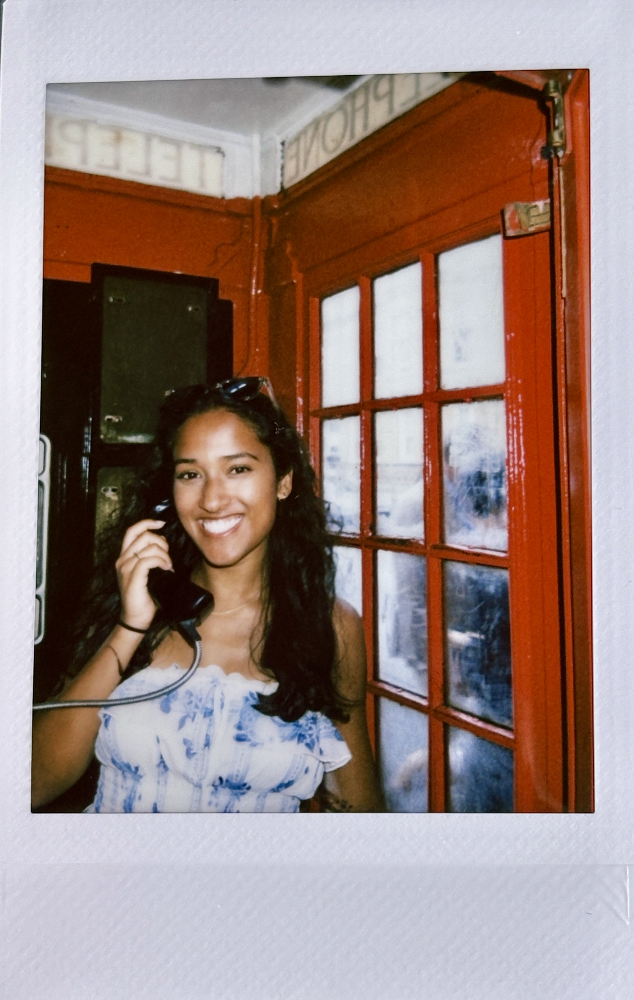

My Journey
I am a robotics engineering student driven by the challenge of deploying software that goes out and interacts with the real world.
I earned my Bachelor of Science in Computer Science and Mathematics from Northeastern University, where I completed two six-month internships called co-ops. My interest in robotics started during my first co-op at the RIVeR Lab, where I worked with Prof. Taskin Padir, Dr. Mark Zolotas, and Dr. Michael Shaham While I was there, I worked on projects like Convoy and PTG , and that’s where I realized how much I enjoy building software that actually runs on real hardware. It made me see that I was much more excited by robotics than traditional software engineering.
For my second co-op, I worked at the Innovation Lab within Amazon Robotics, where I got to contribute to research and development projects in a corporate setting. I really enjoyed that environment, and it’s the kind of work I hope to do in the future.
Through these experiences, I discovered not only my passion for robotics, but also some gaps in my background that I wanted to strengthen. That led me to pursue my Master’s in Robotic Systems Development at Carnegie Mellon University. I’ve already learned a lot in my first year, and I’m excited to keep building toward becoming a well-rounded roboticist who can work across the full system.
Beyond the Lab
Outside of work, I love comedy (often stay up late to watch SNL live), watching movies in theaters, trying out new restaurants, watching F1 (Go Williams!), doing yoga, swimming, and reading!
I'm also on the board of a non-profit called Blocks of Hope where we collect lego sets to donate to kids undergoing cancer treatment. I maintain the company website and have contributed to lego drives and fundraising effors!
Some Fun Moments From My Life



